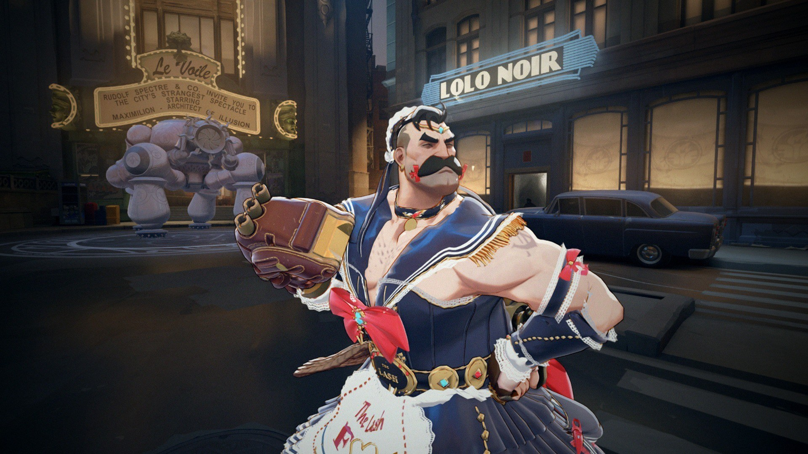

Maid Lash: N°7, Grand Service
Lash in a maid's outfit, with matching kit. Cosmetic only.
SHA-256 868978c7b6afd86d907582e1de4a80f90e3d2d21bea60ed09191593fc1863b17
The hero-page scene is not installed by DMM (a source can't run scripts). For it, download the zip, close Deadlock and run install-scene.cmd (Linux, Steam Deck: install-scene.sh).